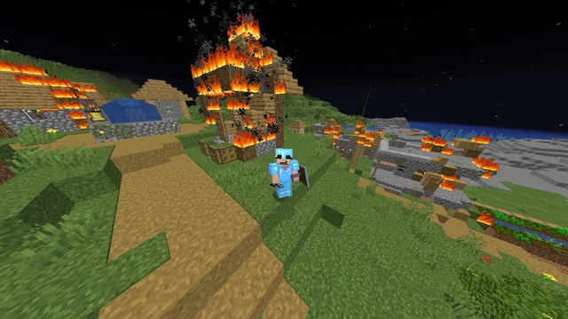
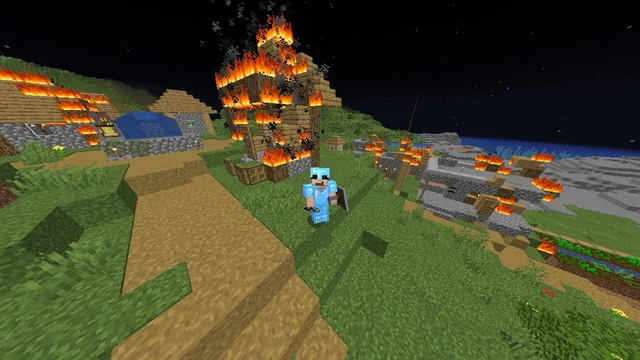

Minecraft es un videojuego de construcción y aventura desarrollado por Mojang Studios y lanzado por primera vez en 2011. El juego permite a los jugadores explorar un mundo generado proceduralmente compuesto por bloques tridimensionales, donde pueden recolectar recursos, construir estructuras y crear objetos.
 

Requisitos del sistema: Los requisitos para jugar a Minecraft dependen del nivel de rendimiento deseado, pero en general, necesitas un sistema operativo de 64 bits, un procesador Intel o AMD, al menos 4 GB de RAM (aunque 8 GB o más es recomendado), y una tarjeta gráfica con compatibilidad con OpenGL 4.5 o superior. La instalación requiere poco espacio, alrededor de 1 GB para el juego base.